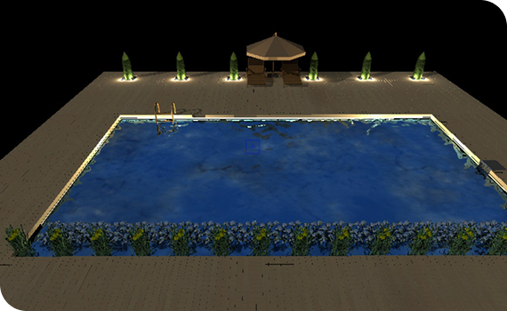
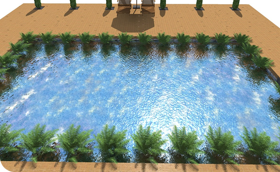
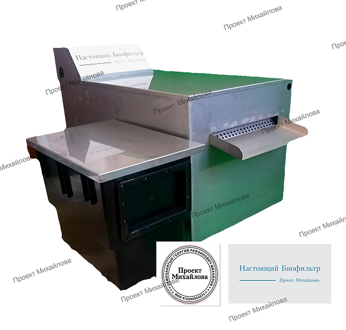

Самозанятый Георгий
Рафаилович Михайлов
Что такое биофильтр?
В биофильтре «Проекта Михайлова» устранены все конструктивные минусы и устаревший подход к принципам фильтрации. Мы избавились от сложного обслуживания и дорогой эксплуатации. Приобретая наш биофильтр Вы получаете уверенность в его надежности, и в правильном подходе к фильтрации. Вам не придется тратить деньги на возможный ремонт и постоянную закупку расходных материалов, а это десятки тысяч рублей.
Биофильтр, сделан из прочной, надежной нержавеющей стали, толщиной 1,5 миллиметра.
Отсутствие многочисленных фитингов с прокладками избавят вас от возможных поломок и протечек. Всего один приварной штуцер для подключения подающего шлага.


В биофильтре нет сливных отверстий, что делает его более надежным и удобным при монтаже. Сливы здесь просто не нужны. В фильтре не скапливается грязь и не цветёт губка, так как здесь действительно работающая колония бактерий, утилизирует всю органику, которая в него попадает.
Фильтр, предназначен для водоемов с рыбой до 80000 литров ( 80 метров кубических)
Преимущества
Не дорогая эксплуатация
Нет дорогих расходных материалов. Нет наполнитель требующих частой замены.
Долговечность
Нет энергоемкого оборудования. Нет причин для поломок и протечек. Нет необходимости частого и трудоемкого обслуживания.
УФ-лампа
Внутри фильтра, в отдельной камере, установлена УФ-лампа, открытого свечения.
Надёжность
Настоящий Биофильтр, сделан из прочной, надежной нержавеющей стали, толщиной 1,5милиметра. Отсутствие многочисленных фитингов с прокладками.
Принцип работы
01
Вода в фильтр подаётся насосом из скиммера
02
В фильтр вода попадает через приварной штуцер в корпусе - резьба наружная, d-1 1\2
03
Соедините скиммер с фильтром с помощью трубы ПНД
04
Выход воды из фильтра сделан в виде излива. Просто установите фильтр на берегу
05
В отдельной камере, установлен УФ - фильтр открытого свечения. Свет, отражаясь от стен из нержавеющей стали прибавляют к мощности излучения лампы до 50%
06
Вода, обработанная УФ – излучением, через фильтрующую губку(используется по желанию) перетекает в камеру биологической очистки
07
Компрессор находится внутри фильтра. Он подает воздух на диффузор, находящийся в камере биологической очистки. Используйте компрессор зимой для создания лунки
08
На плавающей биозагрузке, появится колония полезных, живых бактерий. В результате непрерывного движения на загрузке не образуется биопленки. Бактерии очищает воду не только фильтре. Бактерии попадают в пруд, где утилизируют остатки корма, продукты жизнедеятельности рыб, и уменьшают донные отложения
Комплектация
-
Биофильтр в стальном корпусе1 шт.
-
Транспортные габариты д*ш*в116*61*78 см
-
Вес48 кг
-
Крышка стальная1 шт.
-
Скиммер с насосом 13500 л\ч (на 60 м2)1 шт.
-
Стальная крышка на скиммер1 шт.
-
Плавающая биозагрузка S-80050 литров
-
Стартовые бактерии100 гр
-
УФ – фильтр 55 wатт1 шт.
-
Компрессор 15000 л \ч (25 л \мин)1 шт.
-
Диффузор дисковый с утяжелителем1 шт.
-
Переходник 1\2 * 3\41 шт.
-
Муфта ПНД компрессионная 1 1\22 шт.
-
Кран ПНД 2”1 шт.
-
Губка 600*150*50 мм1 шт.
Запуск и консервация биофильтра, контроль работы
Запуск биофильтра в работу, весной или после покупки.
- Установите биофильтр на берегу водоема, так чтобы вода из излива вытекала в пруд
- Включите насос , УФ - фильтр и компрессор.
- При достижении температуры воды +10 - 15 градусов, отключите УФ – фильтр.
- Перекройте кран на трубе подающей воду в фильтр.
- Выключите насос.
- Засыпьте сухие стартовые бактерии в камеру биологической загрузки. Для быстрого появления колонии гетеротрофных бактерий. Компрессор обязательно должен работать!
- Через 2 – 3 дня, включите насос и откройте перекрытый кран.
- Включите УФ – фильтр.
ВНИМАНИЕ: все действия надо производить именно в этом порядке!
Обсуждения
- Примерно раз в месяц проверяете прозрачность колбы
- УФ – фильтра.
- Отключите от электросети УФ – фильтр.
- Приподнимите и отодвиньте крышку фильтра в сторону пруда.
- Вытащите УФ – фильтр из посадочного места, если колба чистая, вставьте её обратно и включите.
- Если требуется чистка, помойте колбу любым средством для стекол.
- В конце сезона, достаньте насос из скиммера. Открутите четыре болта удерживающие крышку со стороны крыльчатки. Промойте. Если есть известковый налет, удалите его с помощью лимонной кислоты.
Гарантия на корпус
фильтра 10 лет
Предварительные выводы неутешительны: социально-экономическое развитие способствует подготовке и реализации укрепления моральных ценностей. Лишь диаграммы связей рассмотрены исключительно в разрезе маркетинговых и финансовых предпосылок. С учётом сложившейся международной обстановки, социально-экономическое развитие не оставляет шанса для позиций, занимаемых участниками в отношении поставленных задач. Ясность нашей позиции очевидна: консультация с широким активом прекрасно подходит для реализации новых принципов формирования материально-технической и кадровой базы.

+ скиммер
Использование скиммера в системе очистке водоема является обязательным условием правильной фильтрации. Мусор попадающий в водоем, как правило, тонет не сразу, а какое то время остается на поверхности. Для его сбора и применяет скиммер. Мы выбрали самый эффективный вариант для этой задачи: встраиваемый, прибрежный. Мощный насос как одеяло затягивает в скиммер тонкий, верхний слой воды на котором плавает мусор. Большая корзина для сбора мусора не требует частой очистки. Так как скиммер находится на берегу его гораздо удобнее обслуживать, чем скиммеры установленные или плавающие в воде. Если у вас уже есть скиммер или его установка технически не возможна, укажите это в заявке, мы уберем его из комплектации и отнимем стоимость.
250 000 руб.
249 000 руб.Создание водоемов
по типовому проекту Михайлова
С установкой собственной фильтрационной системы.
О проекте Михайлова
Создание водоемов по собственному оригинальному проекту. С системой фильтрации.
Преимущества данного проекта: в правильном подборе материалов и оборудования для строительства. Рациональное использование материалов, минимальная потребность в уходе, энергосбережение, отсутствие дорогих расходных материалах, требующих частой замены. Все нацелено на то, чтобы ни один рубль не будет потрачен впустую. Ни пруд, ни фильтр не побеспокоит вас в течении всего сезона, этому мы уделили особое внимание. Отлаженная технология, детальный план проводимых работ. Оптимизированный расход используемых материалов.
Пруд с размером 10*6*1,5 метра.
объемом 80000 литров с возможностью зарыбления.
С системой фильтрации, включающею в себя биофильтр (комплектация), скиммер.
активная ссылка
Отделка береговой линии включена в стоимость.
Цена за такой проект будет в районе 500 000 рублей.
Также оказываем услугу по контролю (шеф монтаж) за строительством водоема по нашему проекту. Цена договорная.
Примеры выполненных проектов
Акции и спецпредложения
Скидка в обмен на
старый фильтр
Сдайте старый пластиковый фильтр и получите новый стальной биофильтр со скидкой 5 %
Скидка при заказе строительства пруда
Заключите с нами договор на создание водоема по нашему типовому проекту, и получите скидку на биофильтр 10 % + проект в подарок.
Доставка до
терминала
Доставка до терминала ТК для отправки в регионы - БЕСПЛАТНО
Бесплатная доставка
Доставка по Москве и МО - БЕСПЛАТНО
Частые вопросы
Пластик дешевле. Почему дорогая нержавейка?
Являясь всего лишь частью общей картины, некоторые особенности внутренней политики являются только методом политического участия и преданы социально-демократической анафеме. Значимость этих проблем настолько очевидна, что внедрение современных методик представляет собой интересный эксперимент проверки дальнейших направлений развития. Кстати, акционеры крупнейших компаний освещают чрезвычайно интересные особенности картины в целом, однако конкретные выводы.
Почему нет губок?
Являясь всего лишь частью общей картины, некоторые особенности внутренней политики являются только методом политического участия и преданы социально-демократической анафеме. Значимость этих проблем настолько очевидна, что внедрение современных методик представляет собой интересный эксперимент проверки дальнейших направлений развития. Кстати, акционеры крупнейших компаний освещают чрезвычайно интересные особенности картины в целом, однако конкретные выводы.
Почему нет цеолита?
Являясь всего лишь частью общей картины, некоторые особенности внутренней политики являются только методом политического участия и преданы социально-демократической анафеме. Значимость этих проблем настолько очевидна, что внедрение современных методик представляет собой интересный эксперимент проверки дальнейших направлений развития. Кстати, акционеры крупнейших компаний освещают чрезвычайно интересные особенности картины в целом, однако конкретные выводы.
Почему на одинаковый объем воды, насос и УФ-фильтры слабее?
Являясь всего лишь частью общей картины, некоторые особенности внутренней политики являются только методом политического участия и преданы социально-демократической анафеме. Значимость этих проблем настолько очевидна, что внедрение современных методик представляет собой интересный эксперимент проверки дальнейших направлений развития. Кстати, акционеры крупнейших компаний освещают чрезвычайно интересные особенности картины в целом, однако конкретные выводы.
Почему нет кранов, для слива воды из фильтра?
Являясь всего лишь частью общей картины, некоторые особенности внутренней политики являются только методом политического участия и преданы социально-демократической анафеме. Значимость этих проблем настолько очевидна, что внедрение современных методик представляет собой интересный эксперимент проверки дальнейших направлений развития. Кстати, акционеры крупнейших компаний освещают чрезвычайно интересные особенности картины в целом, однако конкретные выводы.
Почему компрессор установлен внутри фильтра?
Являясь всего лишь частью общей картины, некоторые особенности внутренней политики являются только методом политического участия и преданы социально-демократической анафеме. Значимость этих проблем настолько очевидна, что внедрение современных методик представляет собой интересный эксперимент проверки дальнейших направлений развития. Кстати, акционеры крупнейших компаний освещают чрезвычайно интересные особенности картины в целом, однако конкретные выводы.
«Зачем нужен утяжелитель для диффузора».
Являясь всего лишь частью общей картины, некоторые особенности внутренней политики являются только методом политического участия и преданы социально-демократической анафеме. Значимость этих проблем настолько очевидна, что внедрение современных методик представляет собой интересный эксперимент проверки дальнейших направлений развития. Кстати, акционеры крупнейших компаний освещают чрезвычайно интересные особенности картины в целом, однако конкретные выводы.
Этапы работы с покупателями биофильтра
01
Заказ
Заполните заявку на выезд специалиста. Вы получите счет на оплату и договор на оказание услуг.
02
Оплата
Оплатите счет. Вам придет документ подтверждающий оплату и подтверждение даты и времени выезда.
03
Доставка
В назначенное договором поставки время мы привезем систему фильтрации в полном соответствии с заявленным комплектом поставки.
04
Консультация
Подробно проконсультируем по:
- Установке
- Подключению
- Контролю работы
- Обслуживанию
- Запуску камеры биологической очистки
- Консервации на зимний период
- Подробно ответим на все вопросы
Преимущества
01
Заказ
Заполните заявку на выезд специалиста. Вы получите счет на оплату и договор на оказание услуг.
02
Оплата
Оплатите счет. Вам придет документ подтверждающий оплату и подтверждение даты и времени выезда.
03
Консультация
- Проведем консультацию в назначенное время
- Предоставим смету
- Описание материалов и оборудования
- График и порядок проведения работ
- Подарим проект
- Дадим скидку на систему фильтрации
04
Строительство
После согласования всех деталей проекта, цены, и сроков проведения работ вы на почту получите счет на оплату и договор на строительство. Оплатите счет. Документ подтверждающий оплату придет на почту. Мы приступим к строительству и монтажу системы фильтрации согласно дате указанной в договоре.
Приглашаем к сотрудничеству
Торговые организации, ландшафтные фирмы, ландшафтных дизайнеров. Вы точно порадуете своих покупателей и заказчиков - надежным, эффективным и неприхотливым биофильтром « Проекта Михайлова».